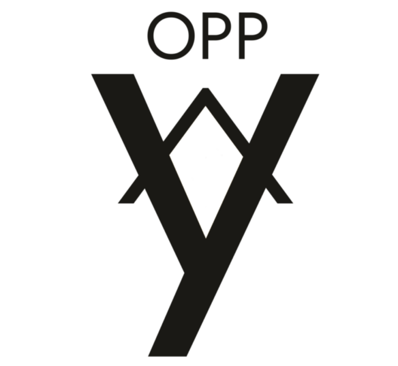
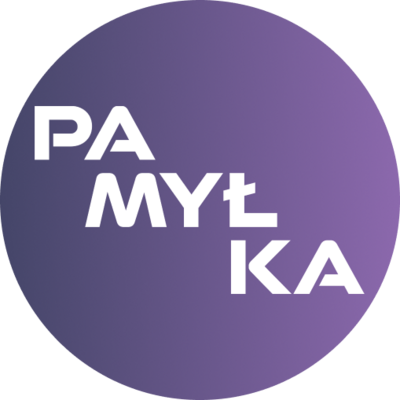
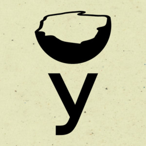
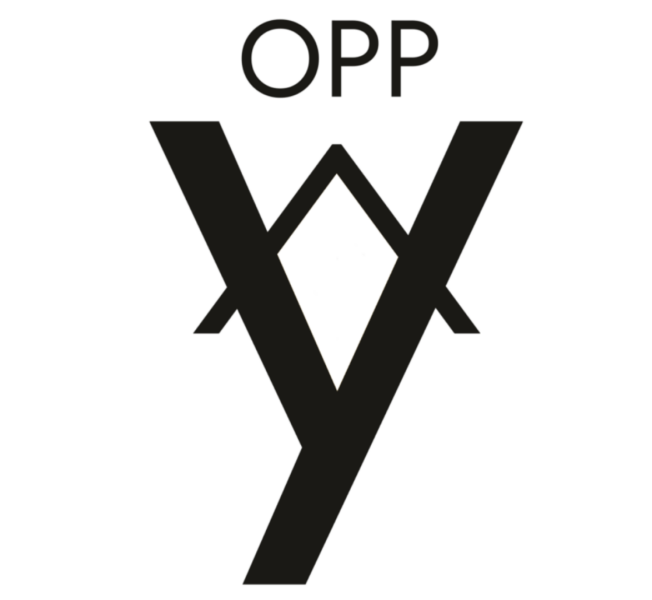
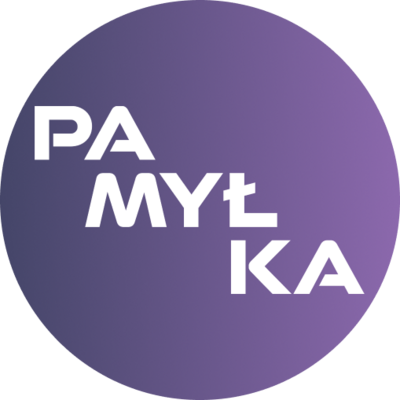
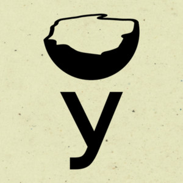

Kanstantsin Loichyts
LANGUAGE SERVICES IN BELARUSIAN, UKRAINIAN, RUSSIAN, AND ENGLISH
TRANSLATION, INTERPRETING, LOCALIZATION, PROJECT MANAGEMENT, AI TRAINING
Business / Medical / Literary / Localization / Academic / Legal
“My lingo is your bingo!”
I'm Kanstantsin Loichyts, an experienced translator, interpreter, and localization consultant. I specialize in:
- Translating literary works and political texts
- Consecutive interpreting for businesses, NGOs, educational and medical purposes
- Localization of digital content, including games, websites, software and videos
- Language and digital project management
- Data annotation and AI training
I work with care, clarity, and cultural sensitivity to ensure that each translation resonates with its intended audience.
Words matter.
Let’s get yours just right!
ABOUT
Meticulous | Reliable | Culturally Attuned | Multidisciplinary
Work with a dedicated linguist and cross-sector consultant, and team coordinator — all in one.
I'm a language industry professional with a proven track record in translation, interpreting, localization, and project management. My working languages are Belarusian, Ukrainian, Russian, and English. I specialize in academic, legal, literary, political, medical, and business content, as well as content localization.
With a degree in Linguistics complemented by certifications in Business Administration and Analysis, and hands-on experience ranging from conference interpreting to managing high-volume multilingual projects, I offer deep domain knowledge and a sharp eye for nuance. I understand that every word counts — and that real meaning goes far beyond literal accuracy.
My work spans multiple industries and formats, and I tailor each project with clarity, purpose, and cultural awareness. Whether it’s a sensitive political report, a real-time business meeting, or an immersive digital product, I ensure your message connects with your audience fluently and authentically.
For larger projects that call for a team effort, I work closely with trusted teams of linguists to ensure consistency, quality, and timely delivery.
SERVICES & SPECIALIZATIONS
TRANSLATION, EDITING & PROOFREADING
I offer translation, editing (including machine translation post-editing), and proofreading tailored to preserve tone and intent across business, academic, legal, cultural, political, and medical domains. My typical projects include:
- Diplomas, certificates, and licenses
- Books and eBooks
- Literary translation and transcreation
- Reports and essays
- Popular science texts
MEDICAL & BUSINESS INTERPRETING
As a consecutive interpreter, I bring clarity and discretion to high-pressure situations, from healthcare consultations to corporate audits. I offer remote (VRI/OPI) and on-site interpreting in Belarusian, Russian, and English. Covered settings include:
- Medical appointments and evaluations
- Business meetings, certifications, and negotiations
- NGO and governmental dialogues
- Educational and professional conferences
LOCALIZATION
As an experienced translator and localization consultant, I take on projects involving:
- Video and multimedia localization
- Game and software localization
- UI/UX-sensitive language quality assurance (LQA)
PROJECT MANAGEMENT
With a solid background in managing complex translation, localization and transcription projects, I offer support in:
- Talent acquisition
- Project planning and delivery
- Team coordination
- Quality control
- Client communication
AI TRAINING & LANGUAGE DATA SERVICES
I assist companies developing multilingual NLP systems by providing high-quality data: from transcription to annotation and review. I specialize in Belarusian and Ukrainian (with their various dialects, scripts, and writing standards). My services include:
- Transcription of audio/video content
- Annotation of multilingual materials (e.g. interviews, news, podcasts, meetings)
- Data preparation for subtitling, translation, or AI model training
TESTIMONIALS
“Kanstantsin demonstrated the depth of his linguistic prowess by developing a language verification test (Belarusian) and providing insightful feedback to improve the quality of our Belarusian database. He later took on a manager role for our Belarusian translation team, hiring and managing a remote global team of translators. Finally, he has been a valuable asset to the company as a Russian and Ukrainian Translator, contributing to projects that require high quality translations on tight deadlines. Kanstantsin is highly recommended by myself and our company as a linguist and colleague.”
— Lead Recruiter, Global Language Service Provider
“Whether it was creating new templates for social media or doing difficult translation work, his quality was always above what we asked for. His communication was also top-notch in high stress situations.”
— Founder, International NGO & Publishing House
CLIENTS & PARTNERS
 





QUICK STATS
📄 1,000,000+ translated and transcreated words 📄
🎮 50+ videos, games and digital products localized 🎮
🌍 25+ multilingual interpreting sessions facilitated 🌍
🗣️ 4 working languages 🗣️
READY TO GET STARTED? GET IN TOUCH!
You’re ready to take the next step — and I’m here to help make it happen. Simply reach out via email, drop a message, give me a call, or schedule a free 15-minute video consultation.